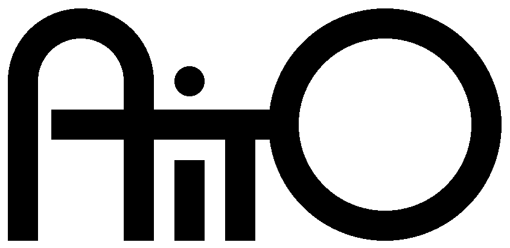
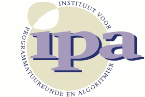
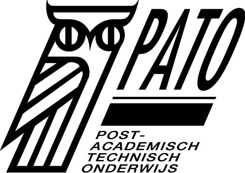

Sponsors
The following organizations support AOSD2002 by providing funds, guarantees, or other kinds of services/facilities:
|  | AITO is the Association Internationale pour les Technologies Objets, a non-profit association registered in Kaiserslautern, Germany. The purpose of the Association is promote the advancement of research in object-oriented technology, primarily in Europe, in particular through the organisation of the annual European Conference for Object-Oriented Programming (ECOOP). |
|
|
ACM, the Association for Computing Machinery, is an international scientific and educational organization dedicated to advancing the arts, sciences, and applications of information technology. With a world-wide membership of 80,000, ACM functions as a locus for computing professionals and students working in the various fields of Information Technology. AOSD2002 is organized in cooperartion with the SIGPLAN and SIGSOFT Special Interest Groups. |

|
The University of Twente is a university that offers both technological and social study programs. The university characterizes itself as an entrepreneurial university, adapting the research efforts to the benefit of society in general. The TRESE group (software engineering chair) of the Department of Computer Science is responsible for the local arrangements. |
| Centre for Telematics and Information Technology (CTIT) | |
|  | Institute for Software and Arithmetic (IPA) |
| Universiteitsfonds Twente | |
| Dutch Organisation for Scientific Research (NWO) | |
| Koninklijke Nederlandse Akademie van Wetenschappen (KNAW) | |
|  | Post Academisch Technisch Onderwijs (PATO) |
|
|
Computer Science at IBM Research has over 1000 researchers located at eight labs around the world. Leading-edge research across many disciplines, including programming languages and software engineering, is often done in concert with colleagues in academic and government research centers, as well as "in the marketplace" with customers who provide challenging research problems. We have contributed to the AOSD field for more than a decade, most recently with Hyper/J and HyperProbe[TM]. |